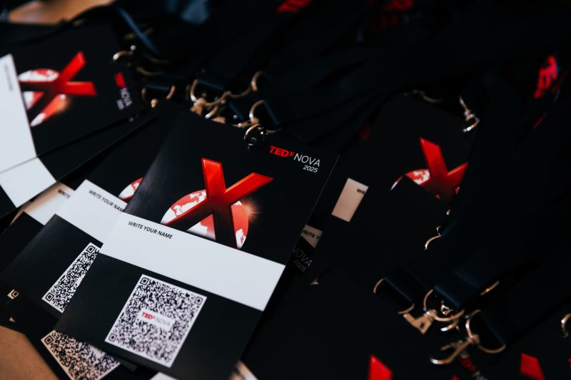
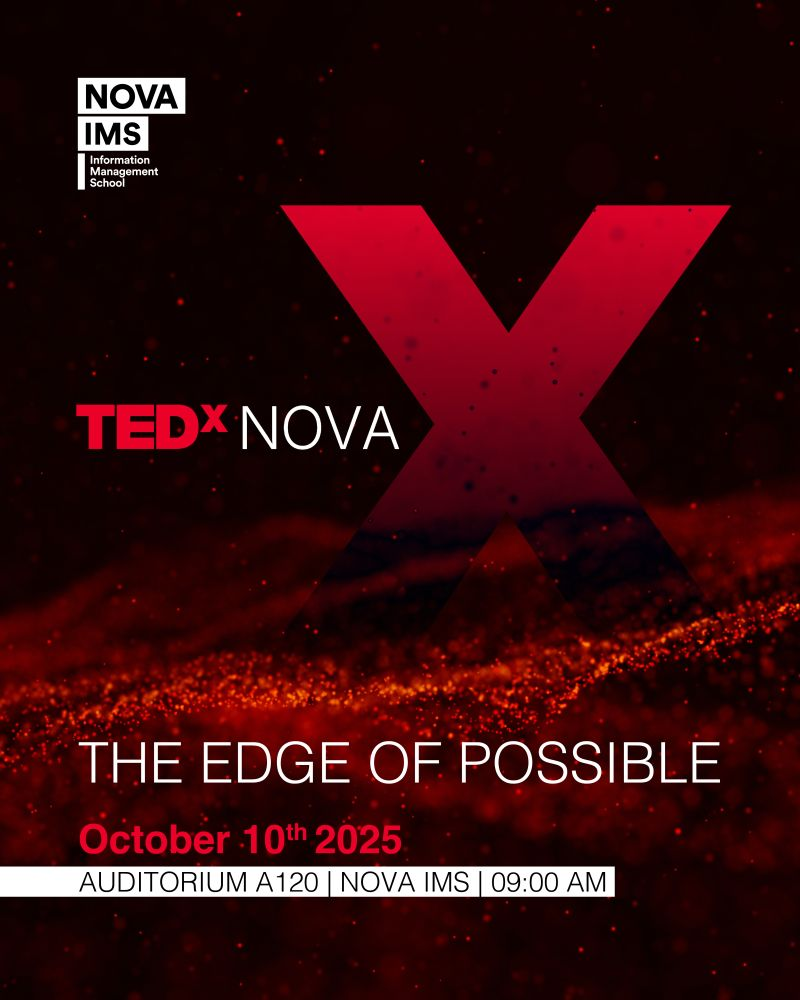
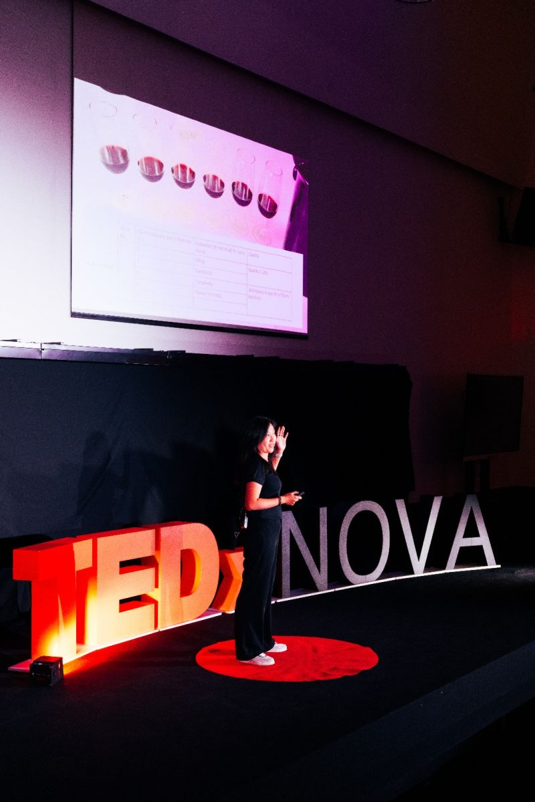
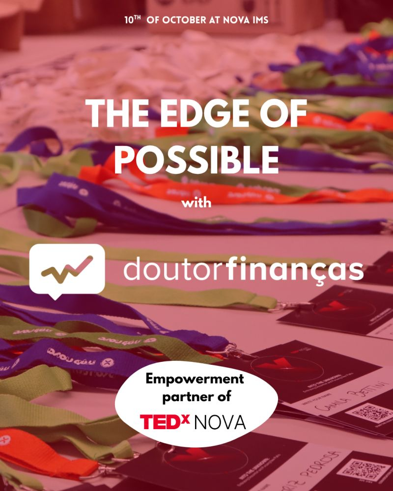
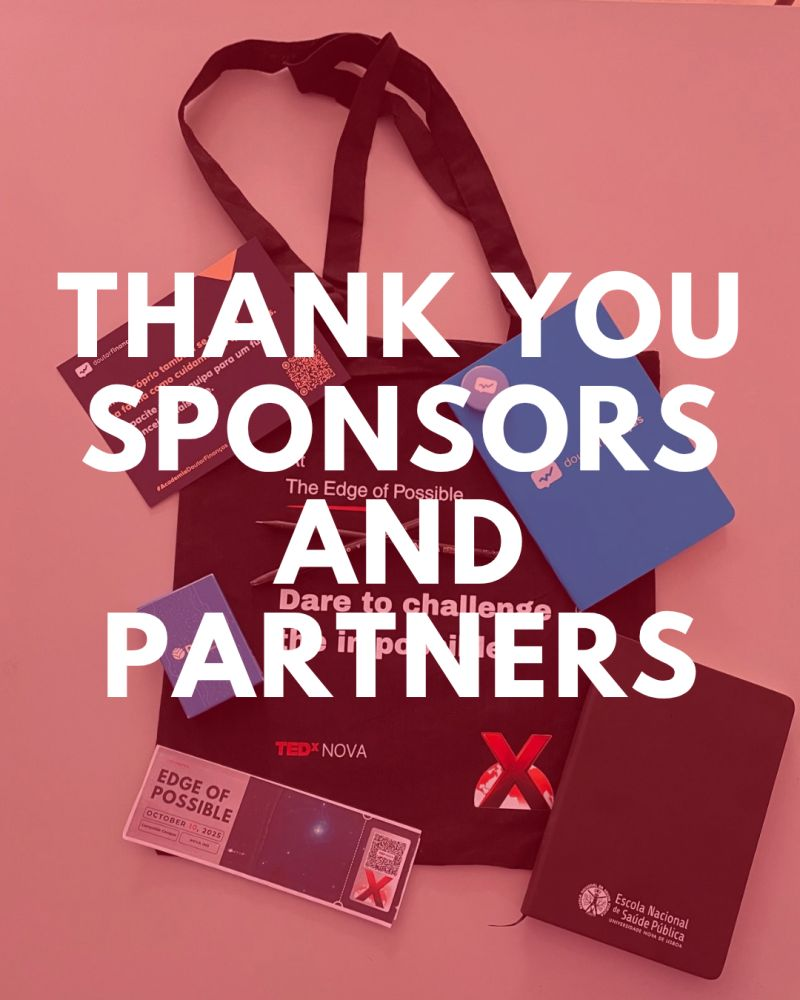

02
MARKETING / EVENT / DIGITAL
ARCHIVED_2025
TEDxNOVA 2025 // NOVA IMS
THE EDGE
OF POSSIBLE
A student-led TEDx event rebuilt into a functioning public-facing operation — from social presence and team coordination to the live digital layer used on event day.
ROLE
MARKETING TEAM LEADER
10 OCTOBER 2025
AUDITORIUM A120
NOVA IMS
09:00
01
REC_02 / MARKETING
RECORD SIGNAL
> RECORDING CONTRIBUTION...
TEDxNOVA started from a damaged social presence and had to rebuild its public audience. I joined to challenge myself outside university, gain practical experience, and work with people interested in building something together.
As Marketing Team Leader, I coordinated the team internally and acted as the bridge with lead organizers and other teams. Alongside the coordination work, I worked directly on the social channels, event promotion, analytics, merchandise and the event's digital infrastructure.
02
MEASURED_01
OUTPUT / SIGNAL
FOLLOWERS RECOVERED PRESENCE
FOLLOWERS EVENT AUDIENCE
GROWTH DOZENS → THOUSANDS
OF POSSIBLE 10.10.25 / NOVA IMS
The figures describe the public result of the team's work; they are not presented as individually attributable outputs. The important change was the scale: a rebuilt account moved from almost no visible activity into the thousands.
03
CLICK TO RETRIEVE
RECOVERED ARTIFACTS
04
ORIGINAL MATERIAL
VISUAL EVIDENCE





05
MARKETING_TEAM_LEADER
POSITION / INTERFACE
TEAM
COORDINATION
Assigned work, organized meetings, supported members, tracked projects and communicated decisions between the marketing team and the wider organization.
PUBLIC
PROMOTION
Worked across Instagram and LinkedIn, supported the event's promotion, and used previous performance to inform the new approach.
DIGITAL
WEBAPP
Independently designed and built the complete live guide used to expose event information in a practical, accessible form.
PHYSICAL
MERCH
Designed T-shirts, tote bags and lanyards following the visual identity developed and approved by TEDxNOVA.
TEDX
> RECORD COMPLETE
FROM RECOVERY
FROM RECOVERY
TO REACH.
By the end, TEDxNOVA had recovered and improved its Instagram presence while attracting an audience close to the practical limit available to the event. The project also gave me something less measurable: a chance to test leadership, design, technology and communication in the same system.